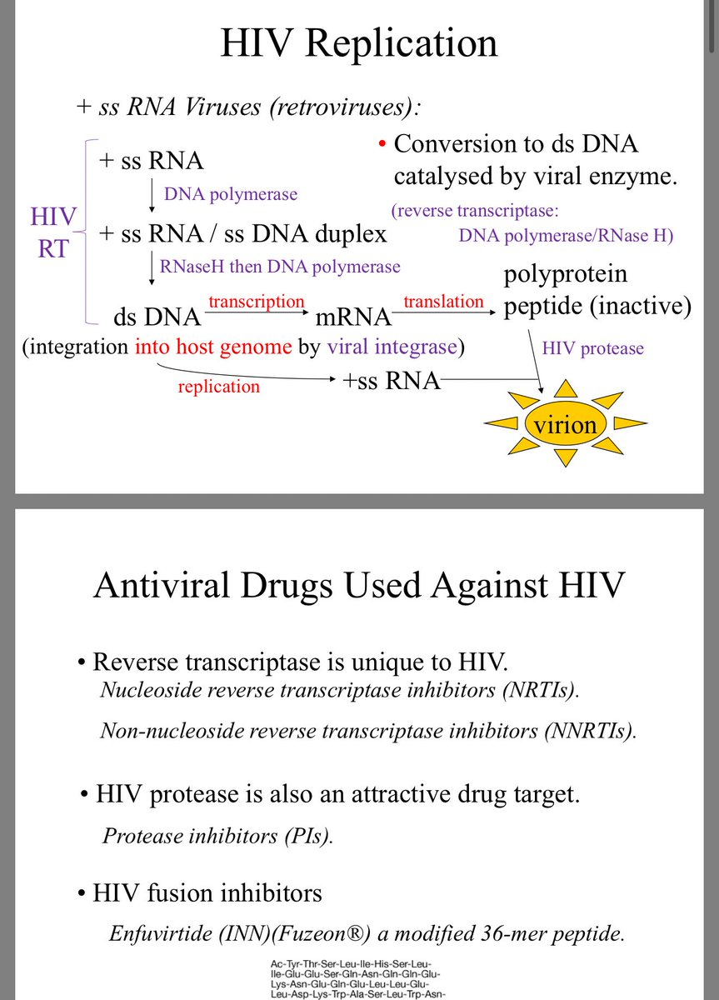

🇫🇷Rika🇪🇺🏳️⚧️
@Rikka_Ela
@8964tou12345678 @ChinityExodus @tuyouair ?因为(+)ssRNA和(-)ssRNA完全就不一个模版的啊

✝️Wayne✝️
@8964tou12345678
@Rikka_Ela @ChinityExodus @tuyouair HIV 疫苗研发难，主要原因是高的变异率整合到宿主 DNA 形成潜伏库。
免疫逃逸机制强（糖盾、构象掩蔽、T 细胞耗竭等）。
没有自然清除的病例可借鉴（不像很多急性病毒）。
不是因为它是“ssRNA 逆转录本身没有任何表达蛋白”。很多 ssRNA 病毒（如流感、COVID）疫苗反而相对容易做。